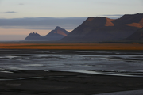
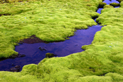
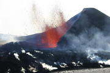

FPSAC 2011, the 23rd International Conference on Formal Power Series and
Algebraic Combinatorics, will take place in Reykjavik, June 13–17.
This year's conference is dedicated to the memory of Philippe Flajolet,
whose obituary you can read here.
The conference will feature invited lectures, contributed presentations, poster session, and software demonstrations. There will be no parallel sessions. Topics include all aspects of combinatorics and their relations with other parts of mathematics, physics, computer science, and biology. The official languages of the conference are English and French.
Invited speakers: François Bergeron (Université du Québec à Montréal, Canada), Richard Ehrenborg (University of Kentucky, USA), Stefan Felsner (Technical University of Berlin, Germany), Ilse Fischer (University of Vienna, Austria), Ron Graham (University of California, San Diego, USA), Rick Kenyon (Brown University, USA), Marc Noy (Polytechnic University of Catalonia, Spain), Lior Pachter (University of California, Berkeley, USA), Monica Vazirani (University of California at Davis, USA), Lauren Williams (University of California, Berkeley, USA).
|  |
|  |  | ..more |
Previous FPSAC conferences: 2010, San Francisco State University; 2009, RISC, Hagenberg; 2008, University of Talca. For more, see the permanent FPSAC site.
| Sponsors: |  |
 |
 |
| Poster: |  |